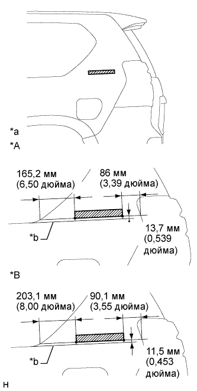

ТАБЛИЧКА ДАННЫХ ИЗГОТОВИТЕЛЯ (для моделей с эмблемой на стойке кузова) > УСТАНОВКА |
| 1. УСТАНОВИТЕ НАКЛАДКУ НИЖНЕЙ БОКОВОЙ ПАНЕЛИ |
|  |
| Параметр / Устройство | Температура |
| Кузов автомобиля | 40 - 60°C (104 - 140°F) |
| Накладка нижней боковой панели | 20 - 30°C (68 - 86°F) |
Очистите поверхность кузова автомобиля.
С помощью нагревательной лампы разогрейте поверхность кузова.
Снимите двухстороннюю клейкую ленту с кузова автомобиля.
Удалите остатки клейкой ленты чистящим средством.
Установите новую накладку нижней боковой панели.
С помощью нагревательной лампы разогрейте кузов и новую накладку нижней боковой панели.
Снимите с поверхности накладки нижней боковой панели отслаивающуюся бумагу.
Установите накладку нижней боковой панели в положение, показанное на рисунке.
| *A | Для 5-дверных моделей |
| *B | Для 3-дверных моделей |
| *a | Справочные значения |
| *b | Воображаемая линия, проходящая от нижнего края неопускного стекла. |